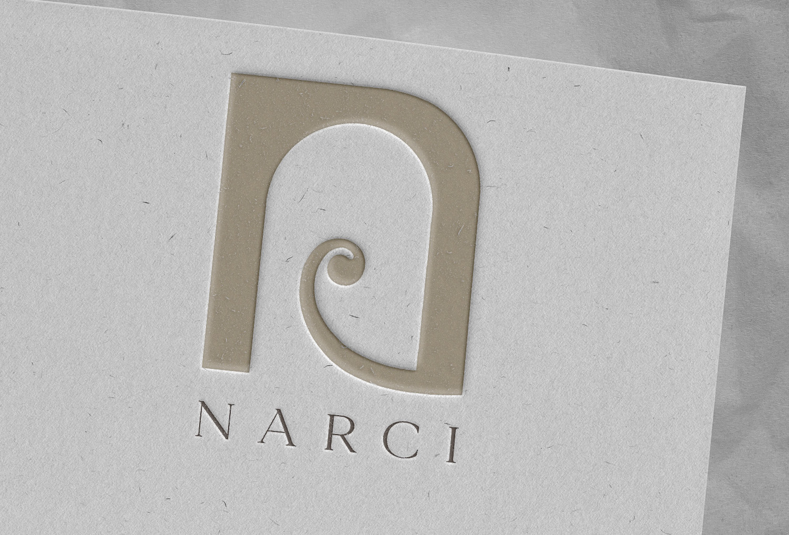
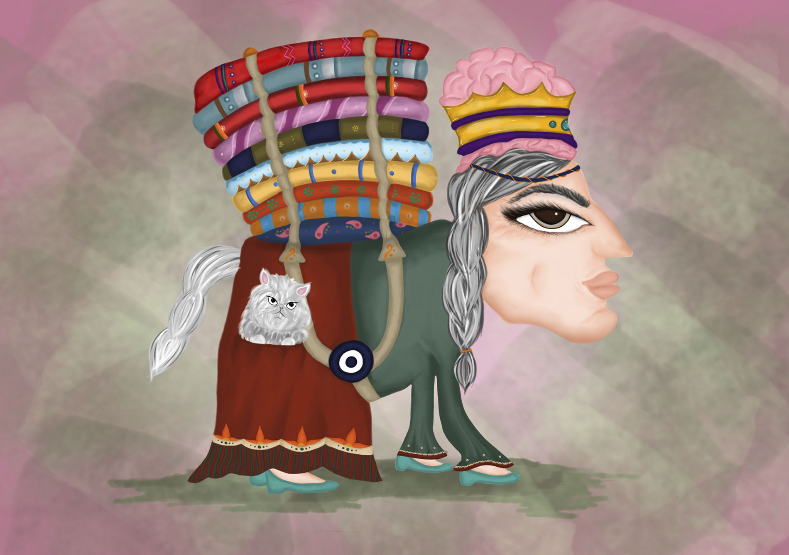
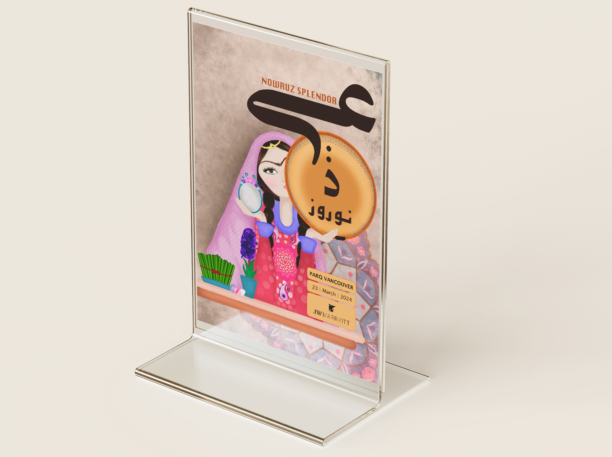

Hi, I’m Narci! I was born in Iran but spent my formative years in the bustling city of Dubai, UAE. Growing up in such a vibrant, multicultural environment has profoundly shaped my artistic journey. From a young age, I’ve always had a passion for art, whether it was painting, drawing, or simply appreciating beautiful designs. This love led me to pursue a Bachelor’s degree in Design, specializing in Visual Communications. It felt like the perfect path for me, allowing me to combine my creativity with my fascination for storytelling through visuals. As a graphic designer, I strive to infuse my work with the rich traditions of my heritage. I have a special affinity for traditional Persian rugs, which inspire my designs with their intricate patterns and deep cultural significance. I also have a deep appreciation for Middle Eastern culture, and I love exploring how it influences contemporary art and design. In my free time, you’ll often find me painting or drawing, diving into the world of traditional art that resonates so deeply with me. I believe that art has the power to connect people, tell stories, and evoke emotions, and I’m excited to share that journey with others. Thank you for taking the time to get to know me!
© © 2024 -2026 Narci - All Rights Reserved